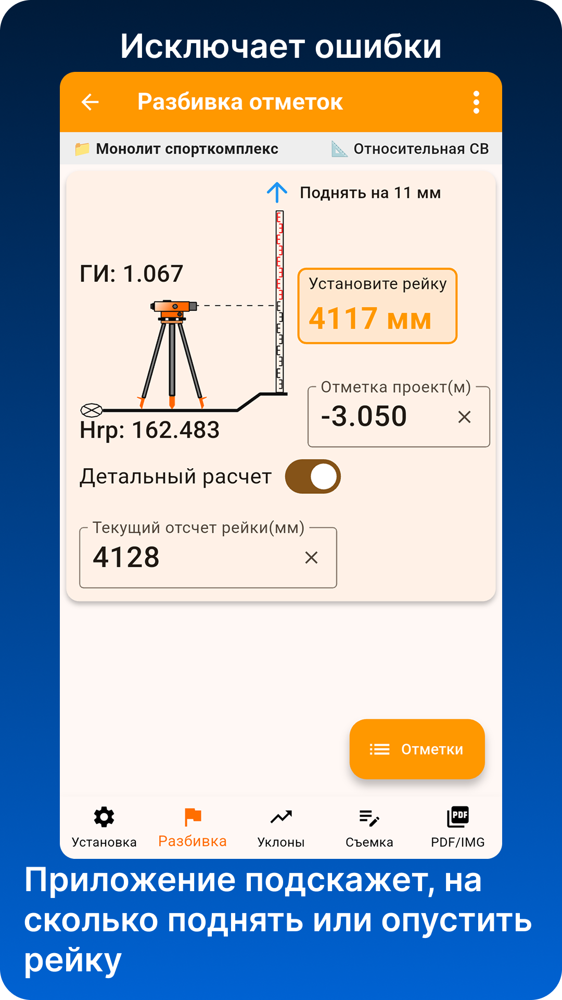
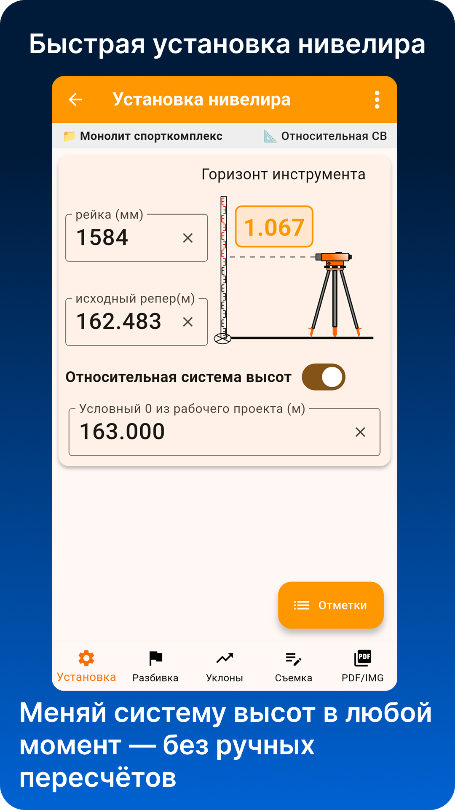
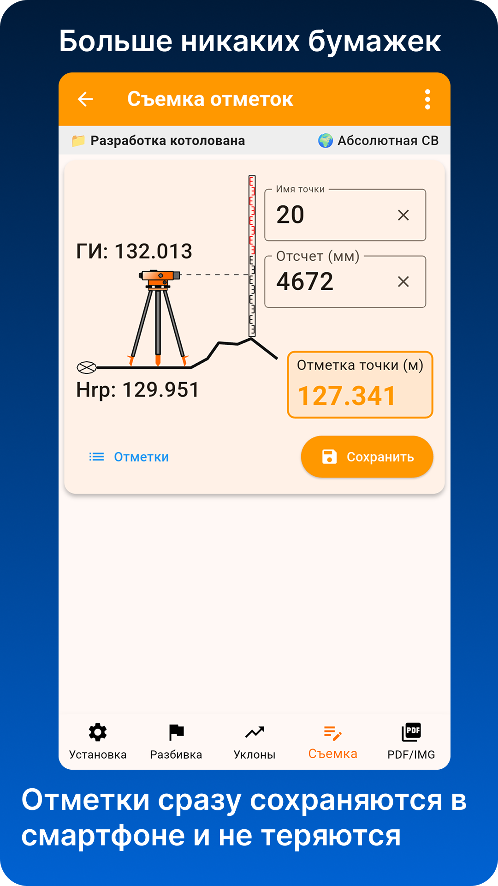
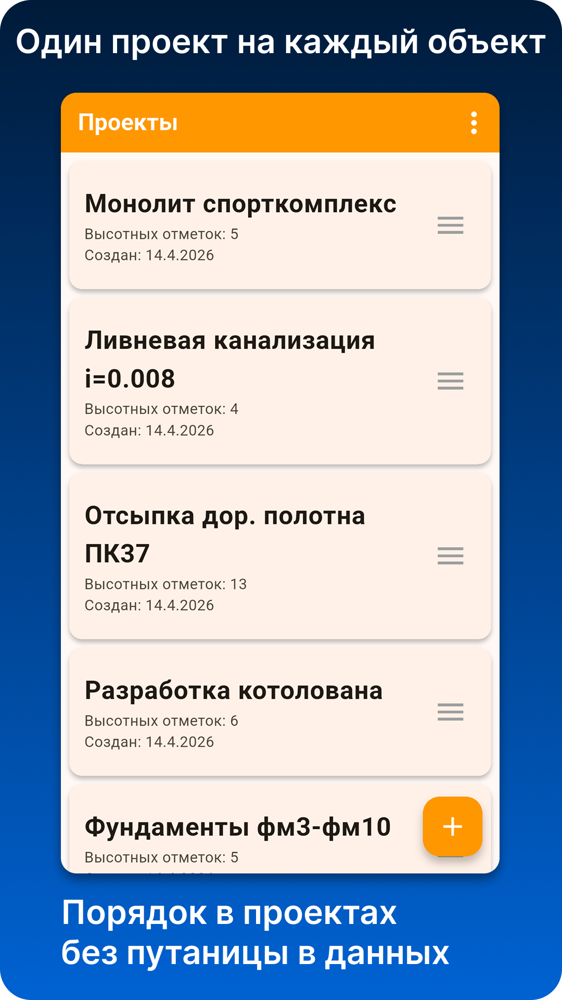

Установка нивелира
Расчёт горизонта инструмента по известной отметке репера и отсчёту по рейке.
Приложение для работы с оптическим нивелиром
Помогает строителям, геодезистам и мастерам выполнять установку станции, разбивку отметок, расчёт уклонов и съёмку высот без бумажной рутины.

Возможности
Приложение закрывает типовые полевые расчёты и помогает хранить данные по каждому объекту отдельно.
Расчёт горизонта инструмента по известной отметке репера и отсчёту по рейке.
Приложение показывает нужный отсчёт по рейке и подсказывает, поднять или опустить рейку.
Расчёт проектных отметок по длине линии и уклону без отдельного калькулятора.
Ввод отсчёта по рейке, получение отметки точки и сохранение результата в проект.
Отдельный проект на каждый объект, чтобы не путаться в отметках и рабочих данных.
Сохранение реперов, проектных отметок и снятых точек внутри проекта.
Для кого
Нивелир ПРО помогает быстро считать высоты, не путаться в проектах и меньше зависеть от бумажных записей в полевых условиях.
Для быстрых расчётов при разбивке, съёмке отметок и контроле высот.
Для работы с проектными отметками, условным нулём и контролем на площадке.
Для плит, полов, уклонов, дорог, бетона и других задач, где нужен нивелир.
Для понимания логики: репер, отсчёт по рейке, горизонт инструмента и отметка.
Экраны приложения
Интерфейс сделан под работу на объекте: минимум лишних действий, крупные значения и быстрый доступ к основным расчётам.






Нивелир ПРО помогает выполнять расчёты при работе с оптическим нивелиром: вычислять горизонт инструмента, переносить проектные отметки на местность, рассчитывать уклоны и сохранять высотные точки по объектам.
Приложение удобно для строительных площадок, монолитных работ, дорожных работ, устройства полов, контроля отметок и обучения основам нивелирования.